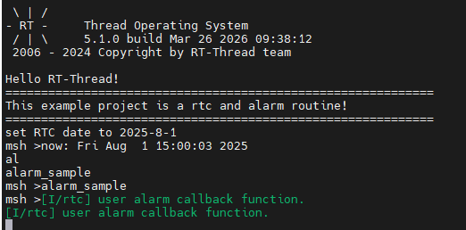
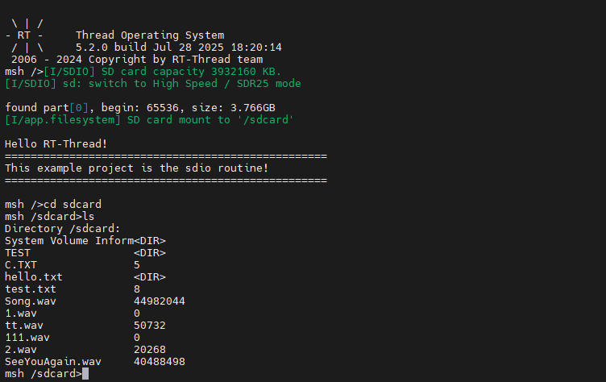
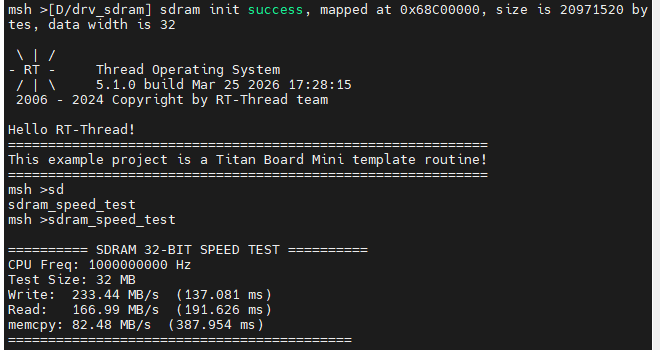
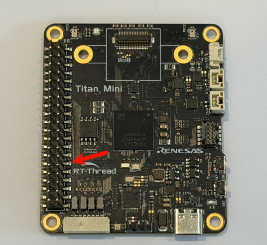
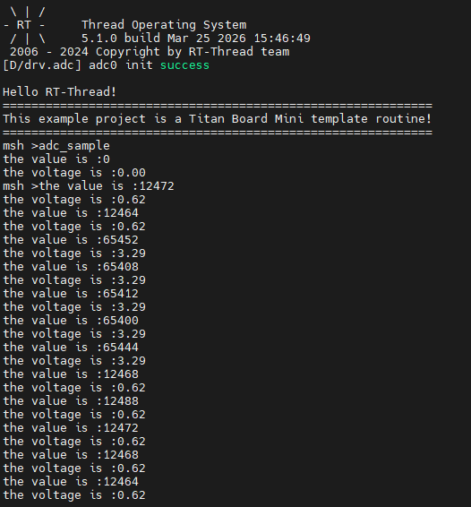
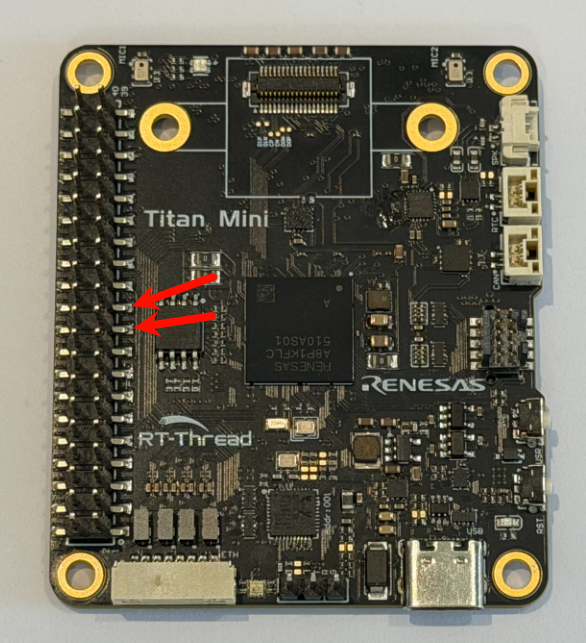
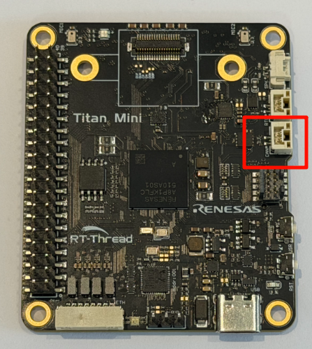
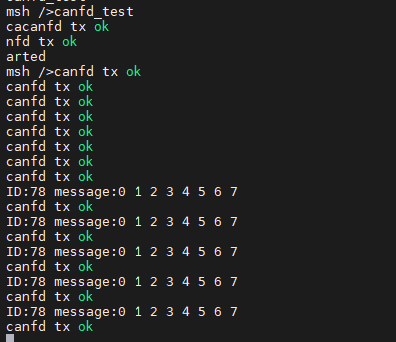

Titan Mini Driver All 示例说明
English | 中文
简介
Titan_Mini_driver_all 是 Titan Mini Board 的外设驱动示例集合工程，用于集中验证常用外设、存储和网络功能。工程通过 MSH 命令行提供各外设的单项示例入口，方便单独调试。
当前工程内已集成的示例包括：
RTC
GPIO / PWM / 按键中断
SD 卡
Flash 文件系统
SDRAM
ADC
SPI
CANFD
I2C
Watchdog
FSP 环境配置
本工程基于 Renesas FSP (Flexible Software Package) 6.4.0 和 RT-Thread Studio 进行硬件抽象层配置与代码生成。开箱即用无需重新配置，但若需要修改外设引脚或新增 FSP Stack，请遵循以下流程。
FSP 下载链接
版本要求
项目 |
版本 |
说明 |
|---|---|---|
FSP 版本 |
6.4.0 |
|
MCU |
R7KA8P1KFLCAC (RA8P1) |
Cortex-M85 + Cortex-M33 双核 |
IDE |
RT-Thread Studio |
内置 FSP 配置插件 |
⚠️ 请务必使用 FSP 6.4.0。其他版本可能导致
ra/、ra_gen/、ra_cfg/重新生成代码与驱动层不兼容。
工程目录结构
Titan_Mini_driver_all/
├── configuration.xml # FSP 配置文件（引脚/时钟/Stack 定义）
├── ra/ # FSP 生成的驱动源码（r_gpt/r_spi/r_canfd 等）
├── ra_cfg/ # FSP 配置头文件（fsp_cfg/）
├── ra_gen/ # FSP 自动生成的硬件抽象数据（hal_data.c/h）
├── board/ # BSP 板级初始化
├── src/ # 应用层示例代码（rt_example_*.c）
└── rtconfig.h # RT-Thread 内核配置
修改 FSP 配置步骤
打开配置：在 RT-Thread Studio 中右键工程 →
Renesas FSP Configuration（或双击configuration.xml）。调整 Stack：在
Stacks视图中新增/移除驱动 Stack（如r_gpt、r_adc、r_canfd），每个 Stack 的属性需与外设章节描述的通道/引脚一致。配置引脚：在
Pins视图中分配引脚模式（GPIO/SPI/I2C/CAN 等），以太网相关引脚需将驱动能力改为H。生成代码：点击
Generate Project Content，FSP 会重新生成ra_gen/hal_data.c、ra_gen/pin_data.c和ra_cfg/下的配置头。同步 RT-Thread Settings：在
RT-Thread Settings中勾选对应驱动框架（PWM / ADC / CAN / SPI / I2C / WDT 等），使 RT-Thread 设备框架注册对应设备节点（如pwm6、adc0、canfd0）。重新编译：FSP 生成代码后必须 clean 再 build，避免旧
.o缓存导致链接错误。
常见问题
找不到
pwm6/adc0等设备：通常是 RT-Thread Settings 未勾选对应驱动框架，或 FSP Stack 未添加。hal_data.h报错：FSP 版本不一致，请用 6.4.0 重新生成。ETH 引脚通信异常：确认 ETH 所有引脚驱动能力已设为
H（参考 Ethernet 章节）。修改配置后链接错误：执行
Project → Clean后再编译。
编译与运行
使用 RT-Thread Studio 打开
project/Titan_Mini_driver_all工程。编译并下载固件到 Titan Mini 开发板。
通过串口终端或 USB PCDC 终端进入 MSH 命令行。
输入
help查看可用命令，各外设示例命令详见后续章节。
上电后终端会打印如下启动信息：
============================================================
Titan Mini Board Factory Test System
============================================================
System initialized successfully!
RTC 示例
介绍
RTC 示例基于 RT-Thread RTC 设备驱动框架，验证 RA8P1 内置实时时钟外设能否正常工作，支持日期/时间设置与读取，以及在启用 RT_USING_ALARM 组件时验证闹钟功能。RTC 由 32.768kHz 晶振驱动，主电源断开后可通过 VBATT 电池备份继续走时。
硬件参数
参数 |
规格 |
说明 |
|---|---|---|
时钟源 |
32.768kHz 晶振 |
副时钟振荡器，精度 ±5ppm |
日历范围 |
2000-2099 |
自动闰年补偿 |
时间格式 |
24 小时制 |
时:分:秒 |
工作电压 |
1.62-3.6V |
宽电压范围 |
备份电源 |
VBATT |
主电源断开后保持时间信息 |
闹钟触发 |
秒/分/时/日/周/月/年 |
多种可编程触发方式 |
使用步骤
输入
rtc_sample，设置 RTC 日期为 2025-8-1、时间为 15:00:00，3 秒后读取并打印当前时间。如果工程启用了
RT_USING_ALARM，可输入alarm_sample创建一个秒级闹钟。
关键代码
示例源码位于 src/rt_example_rtc.c，核心逻辑如下。
时间设置与读取
void rtc_sample(void)
{
rt_device_t device = rt_device_find(RTC_NAME); // RTC_NAME = "rtc"
if (device == RT_NULL)
{
rt_kprintf("find %s failed!\n", RTC_NAME);
return;
}
if (rt_device_open(device, 0) != RT_EOK)
{
rt_kprintf("open %s failed!\n", RTC_NAME);
return;
}
set_date(2025, 8, 1); // 设置日期
set_time(15, 0, 0); // 设置时间
rt_thread_mdelay(3000);
time_t now = 0;
get_timestamp(&now);
rt_kprintf("now: %.*s", 25, ctime(&now));
}
MSH_CMD_EXPORT(rtc_sample, rtc sample);
闹钟创建（依赖 RT_USING_ALARM）
static void user_alarm_callback(rt_alarm_t alarm, time_t timestamp)
{
rt_kprintf("user alarm callback function.\n");
}
void alarm_sample(void)
{
struct rt_alarm_setup setup;
static rt_alarm_t alarm = RT_NULL;
time_t now = get_timestamp(RT_NULL) + 1; // 下一秒触发
struct tm p_tm;
gmtime_r(&now, &p_tm);
setup.flag = RT_ALARM_SECOND; // 秒级闹钟
setup.wktime = *(struct tm *)&p_tm; // 触发时刻
alarm = rt_alarm_create(user_alarm_callback, &setup);
rt_alarm_start(alarm);
}
若未启用
RT_USING_ALARM，alarm_sample会打印alarm sample is unavailable: RT_USING_ALARM is not enabled.。
效果
rtc_sample会设置时间后打印当前 RTC 时间。alarm_sample触发时会打印user alarm callback function.。
运行 alarm_sample 后的终端效果：

GPIO / PWM / 按键中断示例
介绍
这部分示例基于 RT-Thread PWM 设备驱动框架 和 PIN 设备中断接口，验证 RA8P1 的 GPT 通用 PWM 定时器与 GPIO 外部中断功能，包含两类入口：
pwm_sample：手动配置pwm6的周期和占空比，用于示波器观测key_irq_sample：配置按键下降沿中断，触发后切换绿色 LED 状态
硬件参数
参数 |
规格 |
说明 |
|---|---|---|
PWM 设备 |
|
32 位通用 PWM 定时器 |
PWM 计数器 |
32 位 |
范围 0 ~ 4294967295 |
PWM 输出引脚 |
P601 (GTIOC6A) |
示波器观测点 |
LED 引脚 |
|
绿色 LED |
按键引脚 |
|
内部上拉，下降沿触发 |
GPT 工作模式 |
周期 / 单次 / PWM |
方波 / 锯齿波 / 三角波 |
使用步骤
输入
pwm_sample <period> <pulse>，例如pwm_sample 500000 250000（单位 ns，对应 2kHz / 50% 占空比），将示波器接到 P601 观测波形。输入
key_irq_sample，然后按下按键观察绿色 LED 切换。
关键代码
PWM 示例源码位于 src/rt_example_gpt.c，按键中断源码位于 src/rt_example_key_irq.c。
PWM 配置（手动设置周期与脉宽）
#define PWM_DEV_NAME "pwm6"
#define PWM_DEV_CHANNEL 0
static int pwm_sample(int argc, char *argv[])
{
rt_uint32_t period = (rt_uint32_t) atoi(argv[1]);
rt_uint32_t pulse = (rt_uint32_t) atoi(argv[2]);
if ((period == 0) || (pulse > period))
{
rt_kprintf("invalid parameters, ensure period > 0 and pulse <= period.\n");
return -RT_ERROR;
}
struct rt_device_pwm *pwm_dev = (struct rt_device_pwm *) rt_device_find(PWM_DEV_NAME);
rt_pwm_set(pwm_dev, PWM_DEV_CHANNEL, period, pulse);
rt_pwm_enable(pwm_dev, PWM_DEV_CHANNEL);
rt_kprintf("pwm started on %s channel %d, period=%u pulse=%u\n",
PWM_DEV_NAME, PWM_DEV_CHANNEL, period, pulse);
return RT_EOK;
}
MSH_CMD_EXPORT(pwm_sample, configure and start pwm output: pwm_sample <period> <pulse>);
按键中断（下降沿切换 LED）
#define LED_PIN_G BSP_IO_PORT_01_PIN_08
#define KEY_PIN BSP_IO_PORT_02_PIN_01
static volatile rt_bool_t g_key_flag = RT_FALSE;
static void key_irq_callback(void *args)
{
rt_pin_write(LED_PIN_G, g_key_flag ? PIN_HIGH : PIN_LOW);
g_key_flag = g_key_flag ? RT_FALSE : RT_TRUE;
}
void key_irq_sample(void)
{
rt_pin_mode(LED_PIN_G, PIN_MODE_OUTPUT);
rt_pin_mode(KEY_PIN, PIN_MODE_INPUT_PULLUP);
rt_pin_attach_irq(KEY_PIN, PIN_IRQ_MODE_FALLING, key_irq_callback, RT_NULL);
rt_pin_irq_enable(KEY_PIN, PIN_IRQ_ENABLE);
}
MSH_CMD_EXPORT(key_irq_sample, key interrupt sample);
参数换算说明
pwm_sample 参数单位为纳秒：
频率 = 1e9 / period
占空比 = pulse / period × 100%
示例 pwm_sample 500000 250000：
频率 = 1e9 / 500000 = 2000 Hz (2 kHz)
占空比 = 250000 / 500000 = 50%
效果
pwm_sample成功后会打印当前设备、通道、周期和脉宽，P601 可观测到对应波形。key_irq_sample启动后，按键每触发一次下降沿会切换一次绿色 LED。
pwm_sample 500000 250000 的终端输出：

将 P601 接入示波器观测到的 2kHz / 50% PWM 波形：

SD 卡示例
介绍
SD 卡示例基于 RT-Thread DFS 文件系统框架 和 RA8 SDHI 硬件模块，验证 /sdcard 挂载点能否正常创建、写入、读取和删除测试文件。SDHI 通过 SD 总线与 SD/SDHC/SDXC 卡通信，支持 1-bit/4-bit 数据线和 DMA 传输。
硬件参数
参数 |
规格 |
说明 |
|---|---|---|
支持卡类型 |
SDSC / SDHC / SDXC |
兼容 SD v1.x / v2.x |
总线宽度 |
1-bit / 4-bit |
工程默认 1-bit |
数据块大小 |
512 Byte |
标准块大小 |
最高时钟 |
50 MHz SDCLK |
取决于 MCU 时钟配置 |
工作电压 |
3.3V |
部分 Micro SD 支持 1.8V |
错误校验 |
CRC7(命令) / CRC16(数据) |
硬件自动校验 |
使用步骤
确认 SD 卡已插入并已正确挂载到
/sdcard（由BSP_USING_FS_AUTO_MOUNT+BSP_USING_SDCARD_FATFS自动完成）。输入
sdcard_sample执行一次文件读写校验。
关键代码
示例源码位于 src/rt_example_sdcard.c，使用 POSIX 标准 fopen/fputs/fgets/unlink 接口。
void sdcard_sample(void)
{
const char *test_file = "/sdcard/test_sdcard.txt";
const char *test_data = "SD Card test data - Titan Mini Board";
char read_buf[64] = {0};
/* 1. 写入测试数据 */
FILE *fp = fopen(test_file, "w");
if (fp == RT_NULL)
{
rt_kprintf("failed to create test file: %s\n", test_file);
return;
}
fputs(test_data, fp);
fclose(fp);
/* 2. 读回校验 */
fp = fopen(test_file, "r");
if (fgets(read_buf, sizeof(read_buf), fp) == RT_NULL)
{
rt_kprintf("failed to read test data\n");
fclose(fp);
return;
}
fclose(fp);
/* 3. 比对内容 */
if (strcmp(read_buf, test_data) != 0)
{
rt_kprintf("sdcard data mismatch!\n");
return;
}
/* 4. 清理测试文件 */
unlink(test_file);
rt_kprintf("sdcard sample passed\n");
}
MSH_CMD_EXPORT(sdcard_sample, sdcard file read write sample);
效果
成功时会完成测试文件写入、读取、比对和删除，并打印
sdcard sample passed。若挂载异常、写入失败或读回数据不一致，会打印对应的错误原因（
failed to create/write/read或data mismatch）。
SD 卡挂载成功后的终端效果：

Flash 文件系统示例
介绍
Flash 示例基于 RT-Thread DFS + FAL + LittleFS 三层架构，验证板载 QSPI Flash（W25Q64）上 /fal 挂载点的基本读写能力。底层通过 FAL 抽象层管理 Flash 分区，文件系统采用断电安全的 LittleFS。
硬件参数
参数 |
规格 |
说明 |
|---|---|---|
Flash 型号 |
W25Q64 |
板载 QSPI NOR Flash |
容量 |
8MB (64Mbit) |
4KB 扇区 / 64KB 块 / 256B 页 |
接口 |
QSPI (Quad SPI) |
4 位数据线，最高 133MHz |
工作电压 |
2.7V - 3.6V |
— |
擦写寿命 |
~10 万次/扇区 |
常温数据保持 ~20 年 |
文件系统分区 |
|
FAL 分区表定义 |
软件分层
应用层 (flash_sample)
↓
DFS (DFS 框架，提供 fopen/fread/POSIX 接口)
↓
LittleFS (断电安全 + 磨损均衡)
↓
FAL (Flash 抽象层，管理分区)
↓
W25Q64 QSPI 驱动 → OSPI_B 硬件
使用步骤
确认 FAL 和 LittleFS 已启用并自动挂载到
/fal（由BSP_USING_FLASH_FS_AUTO_MOUNT完成，首次挂载失败会自动dfs_mkfs("lfs", ...)格式化）。输入
flash_sample执行一次小文件读写校验（功能验证）。输入
flash_speed_test执行 64KB 文件写入/读取/删除带宽测试。
关键代码
示例源码位于 src/rt_example_flash.c，提供两个命令：flash_sample（功能校验）和 flash_speed_test（带宽测速）。
功能校验（flash_sample）
void flash_sample(void)
{
const char *test_file = "/fal/test_flash.txt";
const char *test_data = "Flash test data - Titan Mini Board";
char read_buf[64] = {0};
/* 1. 写入测试数据 */
FILE *fp = fopen(test_file, "w");
if (fp == RT_NULL)
{
rt_kprintf("failed to create test file: %s\n", test_file);
return;
}
fputs(test_data, fp);
fclose(fp);
/* 2. 读回校验 */
fp = fopen(test_file, "r");
if (fgets(read_buf, sizeof(read_buf), fp) == RT_NULL)
{
rt_kprintf("failed to read test data\n");
fclose(fp);
return;
}
fclose(fp);
/* 3. 比对内容 */
if (strcmp(read_buf, test_data) != 0)
{
rt_kprintf("flash data mismatch!\n");
return;
}
/* 4. 清理测试文件 */
unlink(test_file);
rt_kprintf("flash sample passed\n");
}
MSH_CMD_EXPORT(flash_sample, flash file read write sample);
带宽测速（flash_speed_test）
使用 DWT 周期计数器对 64KB 文件的写入、读取、删除三项操作计时，并换算为 KB/s 带宽。读取阶段同时做数据校验。
#define FLASH_SPEED_TEST_SIZE (64 * 1024) /* 64KB 测试文件 */
#define FLASH_SPEED_BUF_SIZE 4096 /* 单次读写块大小 */
void flash_speed_test(void)
{
/* 1. 顺序写入 64KB（每次 4KB），DWT 计时 */
dwt_init();
FILE *fp = fopen("/fal/speed_test.bin", "wb");
uint32_t start = dwt_get_cycle();
for (offset = 0; offset < total; offset += FLASH_SPEED_BUF_SIZE)
fwrite(wr_buf, 1, FLASH_SPEED_BUF_SIZE, fp);
fflush(fp); fclose(fp);
flash_speed_report("Write", dwt_get_cycle() - start, total);
/* 2. 顺序读取 + 数据校验，DWT 计时 */
fp = fopen("/fal/speed_test.bin", "rb");
start = dwt_get_cycle();
for (offset = 0; offset < total; offset += FLASH_SPEED_BUF_SIZE)
{
fread(rd_buf, 1, FLASH_SPEED_BUF_SIZE, fp);
if (memcmp(rd_buf, wr_buf, FLASH_SPEED_BUF_SIZE) != 0) { /* 校验失败 */ }
}
flash_speed_report("Read", dwt_get_cycle() - start, total);
fclose(fp);
/* 3. 删除文件（对应 Flash 擦除），DWT 计时 */
start = dwt_get_cycle();
unlink("/fal/speed_test.bin");
flash_speed_report("Erase", dwt_get_cycle() - start, total);
}
MSH_CMD_EXPORT(flash_speed_test, flash read/write speed test);
带宽换算公式（与 SDRAM 一致）：
耗时(秒) = DWT 差值 / SystemCoreClock
带宽(KB/s) = (测试字节数 / 1024) / 耗时
效果
flash_sample成功时打印flash sample passed；失败时打印failed to create/write/read或flash data mismatch!。flash_speed_test会输出Write、Read、Erase三项带宽（KB/s）和耗时（ms），并在读取阶段做数据校验。
Flash 写入前必须先擦除，且需按扇区/页对齐。LittleFS 会自动处理磨损均衡和断电保护，应用层直接用 POSIX 接口即可。
Flash 文件系统挂载成功的终端效果：

SDRAM 示例
介绍
SDRAM 示例基于 RA8P1 SDRAMC 控制器，验证外部 64MB SDRAM 是否可读写，并通过 DWT 周期计数器统计写入、读取和 memcpy 三项操作的带宽表现。
硬件参数
参数 |
规格 |
说明 |
|---|---|---|
容量 |
64MB (256Mbit) |
4 banks × 4M × 32bit |
数据宽度 |
32 位 |
高吞吐量数据传输 |
基地址 |
|
访问范围 0x68000000 ~ 0x68FFFFFF |
工作电压 |
3.3V |
— |
CAS 延迟 |
CL3 |
可编程时序 |
刷新机制 |
自动刷新 |
SDRAMC 内置，保证数据完整性 |
使用步骤
输入
sdram_speed_test执行一次 SDRAM 速度测试。
关键代码
示例源码位于 src/rt_example_sdram.c，使用 DWT 周期计数器实现纳秒级计时。
内存映射与计时辅助
#define SDRAM_TEST_WORDS (8 * 1024 * 1024) // 8M words = 32MB
#define SDRAM_BASE_ADDR (0x68000000)
static volatile uint32_t *sdram_buf = (uint32_t *) SDRAM_BASE_ADDR;
static void dwt_init(void)
{
CoreDebug->DEMCR |= CoreDebug_DEMCR_TRCENA_Msk;
DWT->CYCCNT = 0;
DWT->CTRL |= DWT_CTRL_CYCCNTENA_Msk;
}
效果
终端会输出测试容量、CPU 频率以及
Write、Read、memcpy三项带宽结果（单位 MB/s 和 ms）。若读回校验异常，会打印错误地址与期望值/实际值（
expect_low16/actual_low16）。
sdram_speed_test 运行效果：

ADC 示例
介绍
ADC 示例基于 RT-Thread ADC 设备驱动框架，验证 RA8P1 的 adc0 通道 0 是否能正常采样，并将原始值换算为电压值。示例额外加入了无效值检测和接近满量程告警逻辑，避免输入超出参考电压时被误判为正常采样。
硬件参数
参数 |
规格 |
说明 |
|---|---|---|
分辨率 |
16 位 |
原始值范围 0 ~ 65535 |
参考电压 |
3.3V |
代码中以 |
采样通道 |
|
单极性输入，范围 0V ~ 3.3V |
触发方式 |
软件触发 |
通过 |
⚠️ 重要：输入电压必须低于参考电压 Vref。若直接施加 3.3V，可能触发满量程告警或溢出提示。
使用步骤
将待测模拟电压接入 ADC 对应通道（输入应低于 Vref）。
输入
adc_sample启动持续采样线程，每秒输出一次原始值与换算电压。
关键代码
示例源码位于 src/rt_example_adc.c，核心逻辑如下。
电压换算常量
#define ADC_DEV_NAME "adc0"
#define ADC_DEV_CHANNEL 0
#define REFER_VOLTAGE 330 // 3.30V × 100，定点保留 2 位小数
#define CONVERT_BITS (1 << 16) // 16 位分辨率
#define ADC_INVALID_VALUE 0xFFFF // ADC 超量程标记值
#define ADC_WARN_THRESHOLD (CONVERT_BITS * 95 / 100) // 满量程 95% 告警阈值
采样线程主循环
static void adc_vol_sample(void *parameter)
{
rt_adc_device_t adc_dev = (rt_adc_device_t)rt_device_find(ADC_DEV_NAME);
if (adc_dev == RT_NULL)
{
rt_kprintf("adc sample run failed! can't find %s device!\n", ADC_DEV_NAME);
return;
}
if (rt_adc_enable(adc_dev, ADC_DEV_CHANNEL) != RT_EOK)
{
rt_kprintf("adc enable failed! channel = %d\n", ADC_DEV_CHANNEL);
return;
}
while (1)
{
rt_uint32_t value = rt_adc_read(adc_dev, ADC_DEV_CHANNEL);
if (value == ADC_INVALID_VALUE)
{
rt_kprintf("adc overrange: input is too high, please keep it below Vref.\n");
}
else
{
rt_uint32_t vol = value * REFER_VOLTAGE / CONVERT_BITS;
rt_kprintf("the value is :%d\n", value);
if (value >= ADC_WARN_THRESHOLD)
rt_kprintf("warning: near full scale, the voltage is :%d.%02d\n", vol / 100, vol % 100);
else
rt_kprintf("the voltage is :%d.%02d\n", vol / 100, vol % 100);
}
rt_thread_mdelay(1000);
}
}
命令导出
void adc_sample(void)
{
rt_thread_t adc = rt_thread_create("adc", adc_vol_sample, RT_NULL, 1024, 10, 10);
if (adc == RT_NULL)
{
rt_kprintf("create adc thread failed!\n");
return;
}
rt_thread_startup(adc);
}
MSH_CMD_EXPORT(adc_sample, adc sample demo);
电压换算说明
采用定点数计算避免浮点开销：
电压(mV) = ADC 读数 × 参考电压(mV) / 转换位数
= value × 3300 / 65536
代码中：vol = value * 330 / 65536 （单位为 0.01V）
显示： vol / 100 -> 整数部分（V）
vol % 100 -> 小数部分（0.01V）
例如 value = 32768 时，vol ≈ 165，输出 the voltage is :1.65。
效果
adc_sample会周期性打印原始采样值和换算后的电压。当读数为
0xFFFF时提示adc overrange，输入超出量程。当读数接近满量程（≥ 95%）时输出
warning: near full scale。
测试时可用杜邦线将 3.3V 接到 ADC 引脚进行验证：

运行 adc_sample 后的终端采样输出：

SPI 示例
介绍
SPI 示例基于 RT-Thread SPI 设备驱动框架，在 spi1 总线上进行回环测试，默认以 1 MHz、Mode 0、8 位数据宽度工作。测试前需要将 MOSI 与 MISO 短接。
硬件参数
参数 |
规格 |
说明 |
|---|---|---|
SPI 总线 |
|
RA8 硬件 SPI |
挂载设备 |
|
通过 |
数据宽度 |
8 位 |
可配置 1-16 位 |
最大时钟 |
25 MHz（取决于系统时钟） |
示例使用 1 MHz |
工作模式 |
Mode 0 (CPOL=0, CPHA=0) |
主模式 + MSB 优先 |
片选 |
软件控制（ |
回环测试无需片选 |
MOSI/MISO |
P708 / P709 |
树莓派扩展接口 |
使用步骤
按照硬件连接要求短接 P708（MOSI）与 P709（MISO）。
输入
spi_loop_test执行基础 SPI 回环示例。
关键代码
示例源码位于 src/rt_example_spi.c。
#define SPI_BUS_NAME "spi1"
#define SPI_NAME "spi10"
void spi_loop_test(void)
{
static uint8_t sendbuf[1024];
static uint8_t readbuf[1024];
/* 1. 准备测试数据 0x00 ~ 0xFF 循环 */
for (int i = 0; i < (int) sizeof(sendbuf); i++)
sendbuf[i] = (uint8_t) i;
/* 2. 挂载 spi 设备并配置 */
rt_hw_spi_device_attach(SPI_BUS_NAME, SPI_NAME, RT_NULL);
struct rt_spi_configuration cfg = {
.data_width = 8,
.mode = RT_SPI_MASTER | RT_SPI_MODE_0 | RT_SPI_MSB | RT_SPI_NO_CS,
.max_hz = 1 * 1000 * 1000, // 1 MHz
};
struct rt_spi_device *spi_dev = (struct rt_spi_device *) rt_device_find(SPI_NAME);
rt_spi_configure(spi_dev, &cfg);
/* 3. 全双工传输 + 逐字节比对 */
rt_spi_transfer(spi_dev, sendbuf, readbuf, sizeof(sendbuf));
for (int i = 0; i < (int) sizeof(readbuf); i++)
{
if (readbuf[i] != sendbuf[i])
{
rt_kprintf("SPI test fail!!!\n");
break;
}
}
rt_kprintf("\n\nSPI test end\n");
}
MSH_CMD_EXPORT(spi_loop_test, test spi1);
效果
spi_loop_test会打印发送缓冲区和接收缓冲区内容，全部一致时输出SPI test end。
短接 P708（MOSI）与 P709（MISO）构建回环的硬件连接位置：

运行 spi_loop_test 后的终端效果：

CANFD 示例
介绍
CANFD 示例基于 RT-Thread CAN 设备驱动框架 和 RA8P1 CANFD 控制器，使用中断驱动 + 信号量机制实现异步收发，提供 canfd_test 命令启动独立收发线程，持续发送和接收 CAN 报文。
硬件参数
参数 |
规格 |
说明 |
|---|---|---|
CANFD 通道 |
|
RA8P1 内置 2 路独立 CANFD |
仲裁波特率 |
最高 1 Mbps |
传统 CAN 兼容 |
数据波特率 |
最高 8 Mbps |
CANFD 高速段 |
报文 ID |
|
8 字节数据 |
发送缓冲区 |
16 个 / 通道 |
— |
接收 FIFO |
2 个 / 通道 |
中断 + 信号量通知 |
过滤器 |
16 条规则 / 通道 |
— |
错误校验 |
CRC17 / CRC21 |
增强型 CRC |
使用步骤
输入
canfd_test启动收发线程（启动后每秒发送一帧 ID 为0x78的 8 字节报文）。如果对接外部节点，请准备总线回环或对端 CAN 设备，以便观察接收数据。
关键代码
示例源码位于 src/rt_example_canfd.c，使用中断接收 + 信号量唤醒接收线程。
接收回调与接收线程
static struct rt_semaphore g_can_rx_sem;
static rt_err_t can_rx_indicate(rt_device_t dev, rt_size_t size)
{
rt_sem_release(&g_can_rx_sem); // 中断里释放信号量唤醒接收线程
return RT_EOK;
}
static void can_rx_thread(void *parameter)
{
struct rt_can_msg rxmsg = {0};
rt_device_set_rx_indicate(g_can_dev, can_rx_indicate);
while (1)
{
rxmsg.hdrindex = -1;
rt_sem_take(&g_can_rx_sem, RT_WAITING_FOREVER);
if (rt_device_read(g_can_dev, 0, &rxmsg, sizeof(rxmsg)) > 0)
{
rt_kprintf("ID:%x message:", rxmsg.id);
for (rt_uint8_t i = 0; i < rxmsg.len; i++)
rt_kprintf("%d ", rxmsg.data[i]);
rt_kprintf("\n");
}
}
}
发送线程与初始化
static void can_tx_thread(void *parameter)
{
struct rt_can_msg txmsg = {0};
txmsg.id = 0x78;
txmsg.ide = RT_CAN_STDID; // 标准帧
txmsg.rtr = RT_CAN_DTR; // 数据帧
txmsg.len = 8;
while (1)
{
for (rt_uint8_t i = 0; i < txmsg.len; i++)
txmsg.data[i] = i;
rt_device_write(g_can_dev, 0, &txmsg, sizeof(txmsg)); // 每秒发送一帧
rt_thread_mdelay(1000);
}
}
int canfd_test(void)
{
rt_sem_init(&g_can_rx_sem, "canrx", 0, RT_IPC_FLAG_FIFO);
g_can_dev = rt_device_find("canfd0");
rt_device_open(g_can_dev, RT_DEVICE_FLAG_INT_TX | RT_DEVICE_FLAG_INT_RX);
rt_thread_startup(rt_thread_create("can_rx", can_rx_thread, RT_NULL, 2048, 15, 10));
rt_thread_startup(rt_thread_create("can_tx", can_tx_thread, RT_NULL, 2048, 14, 10));
return RT_EOK;
}
MSH_CMD_EXPORT(canfd_test, canfd test);
效果
canfd_test启动后会周期性打印canfd tx ok，收到报文时打印ID:<id> message:<data...>。
开发板 CAN 接口位置（接线时注意 CAN_H / CAN_L 不可接反）：

运行 canfd_test 后的终端收发效果：

I2C 示例
介绍
I2C 示例基于 RT-Thread I2C 设备驱动框架，通过板载软件 I2C 总线 i2c1 读取 LSM6DS3TR-C 六轴 IMU 传感器（加速度 + 角速度 + 温度），并打印解析后的物理量与静态姿态角估算结果，是一个完整的 I2C 传感器读出示例。
硬件参数
参数 |
规格 |
说明 |
|---|---|---|
I2C 总线 |
|
板载软件 I2C（SCL=PIN1292, SDA=PIN1291） |
目标设备 |
LSM6DS3TR-C |
板载六轴 IMU |
设备地址 |
|
7 位地址，WHO_AM_I=0x6A |
加速度满量程 |
±2g |
ODR 12.5Hz，1 LSB ≈ 0.061 mg |
陀螺仪满量程 |
±2000 dps |
ODR 12.5Hz，1 LSB ≈ 70 mdps |
温度精度 |
0.0625 ℃ / LSB |
偏移 25 ℃ |
使用步骤
确认板载 LSM6DS3TR-C IMU 已通过 SDA/SCL/GND/VCC 接入
i2c1（开发板出厂已连接）。输入
i2c_sample命令，将自动完成：设备探测 → 寄存器配置 → 单次数据采集 → 解析打印。
关键代码
示例源码位于 src/rt_example_i2c.c。核心流程为：先做 WHO_AM_I 校验，再配置 CTRL1_XL/CTRL2_G/CTRL3_C 寄存器，最后读取 STATUS_REG 判断数据就绪并按小端顺序拼接 6 字节加速度 / 6 字节角速度 / 2 字节温度。
#define I2C_BUS_NAME "i2c1"
#define LSM6DS3TR_C_I2C_ADDR 0x6A
#define LSM6DS3TR_C_WHO_AM_I 0x0F
/* 寄存器读: 先写寄存器地址, 再读 N 字节 (地址自增) */
static rt_err_t imu_reg_read(rt_uint8_t reg, rt_uint8_t *buf, rt_uint16_t len)
{
struct rt_i2c_msg msgs[2];
msgs[0].addr = LSM6DS3TR_C_I2C_ADDR;
msgs[0].flags = RT_I2C_WR;
msgs[0].buf = ®
msgs[0].len = 1;
msgs[1].addr = LSM6DS3TR_C_I2C_ADDR;
msgs[1].flags = RT_I2C_RD;
msgs[1].buf = buf;
msgs[1].len = len;
if (rt_i2c_transfer(i2c_bus, msgs, 2) != 2)
return -RT_ERROR;
return RT_EOK;
}
void i2c_sample(void)
{
if (imu_init() != RT_EOK) /* WHO_AM_I 校验 + 配置 CTRL1/2/3 */
return;
imu_read_and_print(); /* 读 accel/gyro/temp 并打印 */
}
MSH_CMD_EXPORT(i2c_sample, read LSM6DS3TR-C IMU sensor via i2c1);
效果
成功时会打印一次完整的 IMU 采样，包含加速度（mg）、角速度（dps）、温度（℃）以及由重力方向估算的俯仰角 / 横滚角：
[I/i2c.imu] LSM6DS3TR-C detected, WHO_AM_I=0x6A
[I/i2c.imu] IMU configured: ODR=12.5Hz, accel ±2g, gyro ±2000dps
------ LSM6DS3TR-C IMU Sample ------
Accel (mg) : X= -8.5 Y= 12.3 Z= 1003.4 | |a|= 1003.5
Gyro (dps): X= 0.12 Y= -0.05 Z= 0.08 | |w|= 0.15
Temp (C) : 28.50
Tilt (deg): pitch= -0.49 roll= 0.70 (static estimate)
------------------------------------
失败时可能提示：
cannot find i2c bus i2c1：软件 I2C 总线未注册（检查RT_USING_SOFT_I2C1）IMU not found, WHO_AM_I=0xXX：传感器未应答或地址不匹配，检查接线 / 电源

Watchdog 示例
介绍
Watchdog 示例基于 RT-Thread 看门狗设备框架 和 RA8P1 WDT 硬件，验证 wdt 设备能否正常启动，并通过独立线程模拟"正常喂狗 10 次后停止喂狗"的异常场景，演示看门狗超时复位机制。
硬件参数
参数 |
规格 |
说明 |
|---|---|---|
WDT 设备 |
|
RA8P1 内置独立看门狗 |
独立运行 |
是 |
CPU 停止时仍可计数 |
超时时间 |
128/512/…/16384 个时钟周期 |
可通过 FSP 配置 |
时钟分频 |
1/4/16/…/8192 分频 |
多档可选 |
复位模式 |
复位模式 / NMI 模式 |
复位模式自动重启 |
喂狗方式 |
|
软件控制命令 |
喂狗间隔 |
1000 ms |
由 |
使用步骤
输入
wdt_sample启动看门狗示例。观察前 10 次喂狗日志（每秒一次）。
第 11 次起停止喂狗，保持终端连接，观察系统复位动作。
关键代码
示例源码位于 src/rt_example_wdt.c。
喂狗线程（前 10 次喂狗，之后停止）
#define WDT_FEED_INTERVAL 1000
static void feed_dog_entry(void *parameter)
{
int count = 0;
while (1)
{
if (count < 10)
{
rt_device_control(g_wdt_dev, RT_DEVICE_CTRL_WDT_KEEPALIVE, RT_NULL);
rt_kprintf("[FeedDog] Feeding watchdog... %d\n", count);
}
else
{
rt_kprintf("[FeedDog] Simulate exception! Stop feeding.\n");
}
count++;
rt_thread_mdelay(WDT_FEED_INTERVAL);
}
}
启动看门狗与喂狗线程
int wdt_sample(void)
{
g_wdt_dev = rt_device_find("wdt");
if (g_wdt_dev == RT_NULL)
{
rt_kprintf("cannot find wdt device!\n");
return -RT_ERROR;
}
if (rt_device_control(g_wdt_dev, RT_DEVICE_CTRL_WDT_START, RT_NULL) != RT_EOK)
{
rt_kprintf("start watchdog failed!\n");
return -RT_ERROR;
}
g_feed_thread = rt_thread_create("feed_dog", feed_dog_entry, RT_NULL, 1024, 10, 10);
rt_thread_startup(g_feed_thread);
rt_kprintf("watchdog sample started\n");
return RT_EOK;
}
MSH_CMD_EXPORT(wdt_sample, wdt_sample);
效果
启动后会打印
watchdog sample started。前 10 次每秒打印
[FeedDog] Feeding watchdog... <n>。之后会持续打印
[FeedDog] Simulate exception! Stop feeding.，若 WDT 已配置为复位模式，系统将在超时后自动复位。
运行 wdt_sample 后的喂狗与停止喂狗效果：